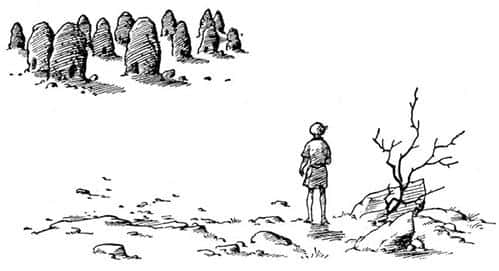

Shasta Mezarlar Arasında
Shasta çatı boyunca ayaklarının ucunda sekerek sessizce ilerledi. Çıplak ayakları sıcağı hissediyordu. Öbür taraftaki duvara tırmanması sadece birkaç saniyesini aldı, köşeye ulaştığında kendini dar ve pis kokulu bir sokağa bakarken buldu. Duvarın dışında Corin’in de söylediği gibi bir çöp yığını vardı. Atlamadan önce, nerede olduğunu anlamak amacıyla hızla etrafa göz gezdirdi. Anlaşılan, Tashbaan’ın üzerinde bulunduğu ada, tepenin öbür yanındaydı. Önündeki her yer aşağı doğru eğimliydi. Düz çatılar birbiri ardından aşağıya, kulelere ve şehrin kuzey duvarlarının burçlarına doğru uzanıyordu. Daha ötede nehir ve nehrin de ötesinde bahçelerle kaplı küçük bir yamaç vardı. Yamacın ötesindeyse, daha önce benzerini hiç görmediği bir şey vardı – durgun bir deniz gibi düzgün, kilometrelerce uzanan, büyük, sarıya çalan gri bir şey. Onun öte yakasında yumru yumru ama kenarları çentikli, kocaman, bazılarının tepesi beyaz, mavi şeyler vardı. “Çöl! Dağlar!” diye düşündü Shasta.
Çöp yığınına atladı ve dar sokakta olabildiğince hızlı, yokuş aşağı koşmaya başladı. Biraz sonra, daha çok insanın bulunduğu genişçe bir caddeye çıktı. Kimse yalınayak koşmakta olan bu pejmürde kılıklı çocuğa bakmaya tenezzül etmiyordu. Yine de huzursuz ve endişeliydi, ta ki bir köşeyi dönüp de şehir kapılarını önünde görene kadar… Burada biraz sıkıştırılıp iteklendi çünkü birçok insan dışarı çıkıyordu. Kapının ötesindeki köprüde kalabalık oldukça yavaşlamıştı, kalabalıktan ziyade bir kuyruğa benziyordu. Tashbaan’ın gürültüsü, sıcağı ve kokusundan sonra her iki tarafta akan berrak sularla, orada hava tertemizdi.
Shasta, köprünün öbür ucuna eriştiğinde kalabalığın azaldığını gördü. Herkes nehir boyunca ya sağa ya da sola gidiyordu. O, pek fazla kullanılmadığı anlaşılan bahçeler arasındaki bir yoldan dosdoğru yukarıya yürüdü. Bazı yerlerde yapayalnız kaldı ve bir müddet sonra yamacın tepesine geldi. Orada dikilerek baktı. Sanki dünyanın sonuna gelmiş gibiydi, çünkü birkaç metre ötede otlar bitiyor ve kumlar başlıyordu; deniz kıyısındaki gibi sonsuz, düzgün kumlar… Ancak biraz daha kabacaydı, çünkü ıslaklık yoktu. Şimdi dağlar daha uzakta, hayal meyal görünüyordu.
Neyse ki, sol tarafta beş dakikalık yürüyüş mesafesinde, tam Bree’nin tarif ettiği gibi, arı yuvalarına benzeyen büyük ama dar, harabe halinde taş kütleleri vardı. Mezarlar bunlar olmalıydı. Güneş arkalarından batmakta olduğu için kapkara ve korkunç görünüyorlardı.
Batıya doğru döndü ve mezarlara doğru yavaşça koşmaya başladı. Batmakta olan güneş yüzüne vuruyor, görmekte güçlük çekiyordu. Buna karşın, arkadaşlarını görebilme umuduyla dikkatle bakmaktan kendini alamıyordu. “Her neyse” diye düşündü, “kuşkusuz en uzaktaki mezarın öbür yanında olmalılar, şehirden herhangi birinin görebileceği bu yanda değil.”
Alçak kemerli kapıları kopkoyu karanlığa açılan, yaklaşık on iki tane mezar vardı. Belli bir düzene göre yerleştirilmedikleri için, her mezarın her tarafına baktığından emin oluncaya kadar, tek tek hepsinin çevresinde yürümek epeyce zamanını aldı. Shasta, bunu yapmak zorunda kalmıştı. Ancak görünürde kimse yoktu!

Orada, çölün kıyısında her yer çok sessizdi ve artık güneş de batmıştı. Aniden arkasından bir yerden korkunç bir ses duydu. Shasta’nın yüreği ağzına geldi ve bağırmamak için dilini ısırmak zorunda kaldı. Az sonra sesin ne olduğunu anladı: Tashbaan’da kapıların kapanması için çalınan borulardı. “Küçük, aptal bir ödlek gibi korkma” dedi kendi kendine. “Bu sabah duyduğun sesle aynı ses bu.” Fakat sabahleyin seni dostlarınla beraber içeriye alan bir sesle, akşamüstü yalnız başına dışarıda bırakan bir ses arasında fark vardır. Ve şimdi kapılar kapalı olduğu için, o akşam diğerlerinin kendisiyle buluşma şansı olmadığını biliyordu. “Ya bu gece Tashbaan’da kilitli kaldılar ya da bensiz yollarına devam ettiler. Tam Aravis’e yakışan bir davranış. Fakat Bree yapmaz bunu. Ah, yapmaz, değil mi?” diye düşündü Shasta.
Aravis hakkındaki düşüncelerinde Shasta bir kez daha yanılıyordu. Aravis gururluydu, çok katı olabilirdi, ama güvenilir biriydi ve sevse de sevmese de, arkadaşlarını asla terk etmezdi.
Şimdi Shasta, geceyi burada geçirmek zorunda olduğunu bildiği için (her dakika ortalık daha da kararıyordu), etrafın görüntüsünden tedirgin olmaya başlamıştı. Büyük, sessiz taş yığınlarında insanı rahatsız eden bir şey vardı. Uzun süredir cinleri düşünmekten kaçınmaya çalışıyordu fakat daha fazla dayanamadı.
“Ah! Ah! İmdat!” diye bağırdı aniden, çünkü o anda bir şeyin bacağına dokunduğunu hissetmişti. Bir şey arkadan gelip dokunduğunda, bağırdığı için kimse suçlanamaz sanırım, özellikle böyle bir yer ve böyle bir zamanda. Hele o kişi önceden de korkmuşsa… Her neyse, Shasta çok korkmuş, kaçmak istemişti. Antik dönemin krallarının gömüldüğü bir yerin etrafında, sizi takip eden ve dönüp bakmaya cesaret edemediğiniz bir şey tarafından kovalanmaktan daha kötü ne olabilir? Shasta bunun yerine, gerçekten yapılabilecek en akıllıca şeyi yaptı. Arkasına baktı ve neredeyse ağzına gelen yüreği ferahladı. Ona dokunan şey sadece bir kediydi.
Shasta kedinin, iri ve vakur bir kedi olduğunu fark etti. Ama ışık o kadar kötüydü ki onu tamamıyla göremedi. Mezarlar arasında yıllarca yalnız yaşamış gibi görünüyordu. Gözleri, sanki bir sır sakladığını düşündürüyordu insana.
“Pisi pisi” dedi Shasta. “Sanırım sen konuşan bir kedi değilsin.”
Kedi ona öncesinden daha dikkatlice baktı. Sonra uzaklaşmaya başladı ve tabii ki Shasta onu takip etti. Mezarların arasından çölün bulunduğu tarafa doğru yürüdüler. Orada kedi, kuyruğu ayaklarına sarmalanmış olarak, yüzü çöle, Narnia’ya ve kuzeye doğru dönük, sanki düşmanın gelmesini bekliyormuş gibi sessizce dimdik oturdu. Shasta, arkası kediye ve yüzü mezarlara dönük olarak onun yanına uzandı; çünkü insan tedirginse yüzünün tehlikeye dönük ve arkasında sıcak ve sağlam bir şeyin olması kadar iyi bir şey yoktur. Kumlar size pek rahat gelmeyebilirdi, ama Shasta bunun farkına bile varmadı; haftalardır yerde uyuyordu. Yatar yatmaz uyuyakaldı. Rüyasında bile Bree, Aravis ve Hwin’e ne olduğunu merak ediyordu.
Daha önce hiç duymadığı bir sesle aniden uyandı. “Belki sadece bir kâbustu” dedi kendi kendine. Aynı anda kedinin arkasında olmadığını fark etti ve gitmemiş olmasını diledi. Fakat gözlerini bile açmadan, tıpkı sizin ya da benim, yorganın altında hareketsizce yatmamız gibi sessizce yatmaya devam etti, çünkü oturup mezarların etrafına ve ıssızlığa bakarsa daha fazla korkacağını hissetmişti. Sonra yine – arkasından, çölden, acı ve insanın içine işleyen bir ses geldi. Kuşkusuz o zaman gözlerini açıp oturmak zorunda kaldı.
Ay pırıl pırıl parlıyordu. Düşündüğünden daha yakında ve daha büyük olan mezarlar ayışığında gri renge bürünmüşlerdi. Sanki yüzlerini ve başlarını da örten gri cüppeler giymiş dev insanlar gibi görünüyorlardı. Bütün bunlar, yabancı bir yerde geceyi yalnız geçiren birinin yanı başında görmeyi arzu ettiği şeyler değildi. Ses aksi yönden, yani çölden gelmişti. Shasta, sırtını mezarlara dönmek (bunu pek sevmedi) ve düzgün kumlara bakmak zorunda kalmıştı. Vahşi çığlık yeniden çınladı.
“Umarım yine aslanlar değildir” diye düşündü Shasta. Aravis ve Hwin’e rastladıkları gece duyduğu aslan kükremelerine benzemiyordu bu sesler. Aslında duyduğu çakalların sesiydi, ne var ki Shasta bunu bilmiyordu. Bilseydi bile bir çakalla karşılaşmayı pek istemezdi.
Çığlıklar tekrar tekrar yankılandı. “Her neyseler, sayıları birden fazla ve yaklaşıyorlar” diye düşündü Shasta.
O anda mantıklı bir çocuk gibi davransaydı, sanırım mezarların arasından geçip vahşi hayvanların gelme olasılığı az olan, etrafında evlerin bulunduğu nehre doğru yürürdü. Ne var ki, orada da cinler vardı (ya da o öyle düşünüyordu). Mezarları geçip geri gitmek, mezarların o karanlık kapılarının önünden geçmek demekti ve kim bilir neler çıkardı oralardan? Aptalca olabilirdi ama Shasta, vahşi hayvanlara karşı riske atılmayı yeğleyeceğini hissetmişti. Sonra çığlıklar artarak yaklaştıkça, fikrini değiştirmeye başladı.
Bulunduğu yerle çöl arasında kocaman bir hayvanın aniden sıçradığını gördüğünde, geriye doğru kaçmak üzereydi. Ay arkasında olduğu için hayvan kapkara görünüyordu. O an Shasta, dört ayak ve karmakarışık tüylü bir kafadan başka hiçbir şey göremedi. Hayvan, Shasta’nın farkına varmamış gibi görünüyordu; aniden durdu, başını çöle doğru çevirdi, mezarlarda yankılanan ve Shasta’nın ayağının altındaki kumları sarsan bir kükreme koyuverdi. Diğer yaratıkların çığlıkları ansızın kesildi. Shasta, hızla koşarak uzaklaşan ayak sesleri duyduğunu düşündü. Sonra heybetli hayvan, Shasta’yı incelemek üzere ona döndü.
“Bir aslan, eminim bir aslan” diye düşündü Shasta. “İşim bitik. Çok canımı yakar mı acaba? Keşke her şey bitmiş olsaydı. İnsanlar öldükten sonra bir şey oluyor mu acaba? O-o-o! İşte geliyor!” Gözlerini kapattı, dişlerini sıktı.
Ancak pençeler ve dişler yerine, sadece ayaklarının dibinde bir sıcaklık hissetti. Gözlerini açtığında “Hey, düşündüğüm kadar büyük değilmiş!” dedi, “Tahmin ettiğimin yarısı kadar büyüklükte. Hayır, dörtte biri kadar bile değil. Tuhaf. Ama bir kedi bu!! Bir at kadar büyük olduğunu hayal etmiş olmalıyım.”
Hayal etmiş olsun ya da olmasın, gerçekten de şimdi ayağının dibinde yatan ve büyük, yeşil gözlerini kırpmadan ona bakan kedi, biraz önce gördüğü kediden başkası değildi. “Oh, pisi pisi” dedi Shasta nefes nefese. “Seni yeniden gördüğüm için öyle mutluyum ki. Çok kötü rüyalar görüyordum.” Sonra hemen, gecenin başlangıcında olduğu gibi, yeniden kediyle sırt sırta uzandı. Kedinin sıcaklığını bütün vücudunda hissetti.
Shasta, kendi kendine mi, yoksa kediyle mi konuştuğu tam belli olmayan bir şekilde “Yaşadığım sürece bir daha asla kedilere kötü davranmayacağım” dedi. “Bir kere kötülük etmiştim biliyor musun? Karnı aç, uyuz bir sokak kedisini taşlamıştım. Hey! Yapma!” Tam o anda kedi dönmüş ve onu tırmalamıştı. “Böyle şey istemem” dedi Shasta. “Sanki ne söylediğimi anlıyormuşsun gibi.” Sonra uykuya daldı.
Ertesi sabah uyandığında kedi gitmişti. Güneş şimdiden yükselmişti ve kumlar sıcaktı. Çok susamış olan Shasta oturdu ve gözlerini ovuşturdu. Çöl, insanı kör edecek derecede bembeyazdı. Ardındaki şehirden sesler bir mırıltı gibi duyulmasına karşın, bulunduğu yerde her şey sakindi. Hafifçe sola, batıya baktığında çölün ötesindeki dağları görebiliyordu; hatları öylesine keskin ve net görünüyordu ki, sanki bir taş atımı uzaklıktaydılar. Shasta, zirvesine yakın bir yerde çatallanıp ikiz tepe oluşturan mavi yükseltiye özellikle dikkat etmişti. Burası Pire Dağı olmalıydı. “Kuzgunun söylediğine bakılırsa gideceğimiz yön bu olmalı” diye düşündü. “Diğerleri geldiğinde vakit kaybetmemek için yönümüzü belirlemeliyim.” Böylece, ayağıyla dosdoğru Pire Dağı’nı gösteren derin ve düzgün bir yarık açtı.
Şimdi önündeki yegâne iş, yiyecek ve içecek bir şeyler bulmaktı. Shasta yavaşça mezarların arasından – şimdi o kadar sıradan görünüyorlardı ki, onlardan neden korktuğunu merak ediyordu – aşağıya, nehrin yanındaki ekili tarlalara doğru koştu. Şehrin kapıları belli saatlerde açıldığı için, sabahın ilk kalabalığı içeriye girmişti. Çevrede görünen birkaç insan vardı, ama sayıları fazla değildi. Biraz ganimet toplamakta (Bree’nin dediği gibi) hiç zorluk çekmedi. Bir bahçe duvarına tırmanmayı gerektirmişti bu, ama sonuçta üç portakal, bir kavun, birkaç incir ve bir narı olmuştu. Bundan sonra köprüye çok yaklaşmadan nehir kıyısına indi ve susuzluğunu giderdi. Su o kadar güzeldi ki, terli ve kirli giysilerini çıkarıp suya daldı. Shasta’nın tüm yaşamı deniz kıyısında geçtiği için, kuşkusuz yürümeyi öğrenir öğrenmez, yüzmeyi de öğrenmişti. Sudan çıktığında, çimlerde uzanıp suyun öte yanında bütün ihtişamı, şaşaası ve azametiyle yükselen Tashbaan’ı seyretti. Fakat bu ona, oranın tehlikelerini de hatırlattı. Aniden, kendisi yüzerken diğerlerinin mezarlara ulaşmış olabileceğini düşündü (“Ya bensiz gittiler, ya da hâlâ oradalar”). Korkuyla giyindi ve geldiği yöne doğru öyle bir hızla koştu ki, mezarlara geldiğinde sanki hiç yüzmemiş gibi ter içinde kalmış ve susamıştı.
Yalnız başınıza bir şey beklediğiniz günlerde olduğu gibi, bu gün de ona sanki yüz saat uzunluğundaymış gibi göründü. Kuşkusuz düşünmesi gereken pek çok şey vardı, fakat yalnız başına oturup düşünmek oldukça yavaşlatır zamanı. Uzunca bir süre Narnialıları düşündü; özellikle de Corin’i. Sedirde yatıp bütün gizli planlarını dinleyen çocuğun, gerçekte Corin olmadığını anladıkları zaman neler olduğunu merak ediyordu. Tüm o nazik insanların, kendisini bir hain olarak göreceğini düşünmek hiç de hoş değildi.
Ne var ki güneş ağır ağır yükselerek göğe tırmanıp yeniden ağır ağır batıda alçalmaya başladığı ana kadar ortalıkta kimse görünmeyince, endişelenmeye başladı. Kuşkusuz şimdi, mezarlarda birbirlerini beklemeyi kararlaştırdıklarında, ne kadar süreyle beklemeleri gerektiği konusunda kimsenin bir şey söylemediği aklına gelmişti. Yaşamının geri kalan kısmında orada bekleyemezdi ki! Biraz sonra hava kararacaktı ve yine dün geceki gibi bir gece geçirecekti. Aklından bir düzine değişik plan geçti. Hepsi de kötüydü, ama sonunda o, en kötü planda karar kıldı! Karanlık basıncaya kadar bekleyip nehre geri gitmeye ve taşıyabileceği kadar kavun çalıp o sabah kumda çizdiği çizgiye güvenerek, Pire Dağı’na doğru yalnız başına yola çıkmaya karar verdi. Bu çılgınca bir fikirdi ve eğer çöl yolculukları üstüne sizin okuduğunuz kadar kitap okumuş olsaydı, bunu hayal bile etmezdi.
Güneş batmadan önce bir şey oldu. Kafasını kaldırıp iki atın kendisine doğru geldiğini gördüğünde, Shasta mezarlardan birinin gölgesinde oturuyordu. O anda yüreği hopladı çünkü onları Bree ve Hwin olarak algılamıştı. Fakat biraz sonra düş kırıklığına uğradı. Aravis’ten eser yoktu. Atlar tuhaf bir adamın yönetimindeydiler; soylu bir ailenin sevilen bir kölesi gibi, oldukça güzel giyinmiş silahlı bir adamdı bu. Bree ve Hwin artık yük atlarına benzemiyorlardı, fakat eyerlenmiş ve dizginlenmişlerdi. Bütün bunlar ne anlama geliyordu? “Bu bir tuzak” diye düşündü Shasta. “Birisi Aravis’i yakaladı, belki ona işkence ettiler ve o herkesi ele verdi. Sevinçle koşarak ortaya çıkmamı ve Bree’yle konuşmamı istiyorlar. Ve o zaman da beni yakalayacaklar! Ama bunu yapmazsam, öbürleriyle tek buluşma şansımı da harcamış olacağım. Keşke ne olduğunu bilseydim.” Arada bir bakarak, göstereceği en tehlikesiz davranışın ne olduğunu düşünerek mezarın arkasında gizlendi.